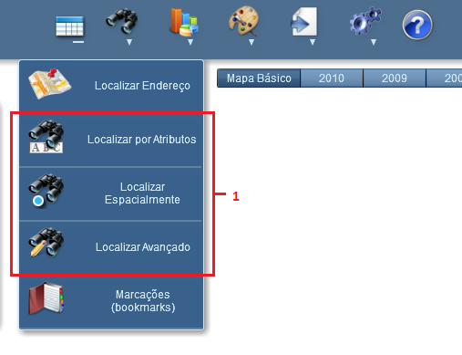
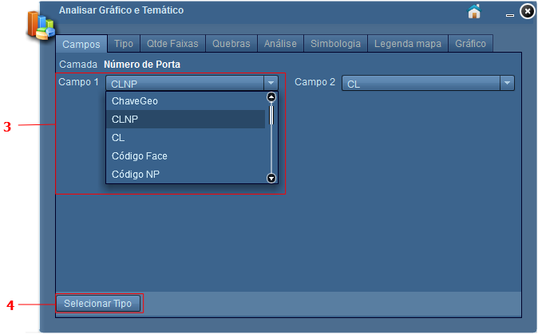
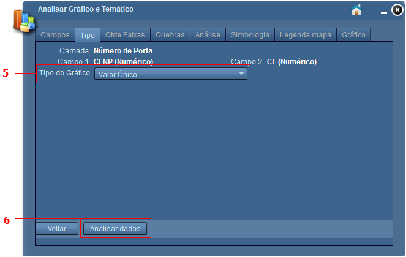
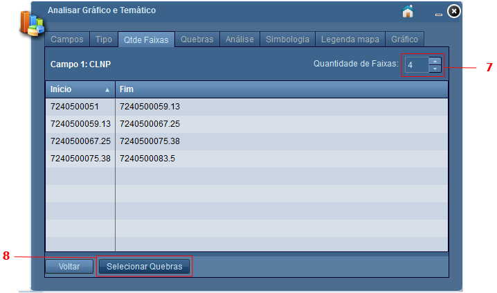
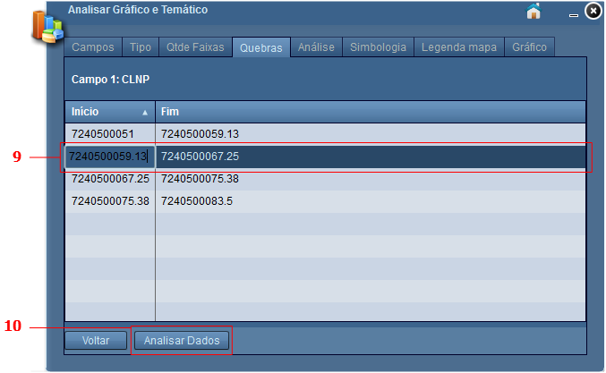
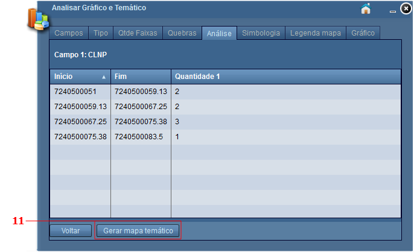
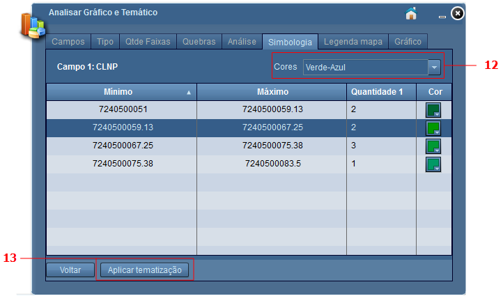
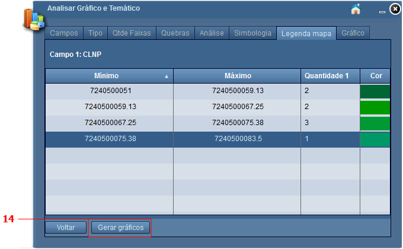
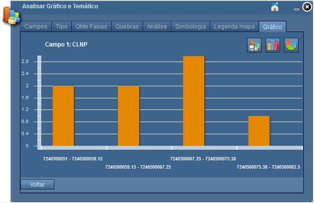

Analisar por Faixa de Valor
Passos para analisar por faixa de valor:
1 - Pesquisar informações que deseja analisar (utilizar ferramentas de pesquisa, Localizar por Atributos, Localizar Espacialmente, Localizar Avançado);

2 - Clicar sobre o símbolo "Analisar Gráfico e Temático";

3 - Selecionar valor numérico em campo 1;

4 - Clicar sobre o botão "Selecionar Tipo";
5 - Selecionar opção "Faixa de Valor";

6 - Clicar sobre o botão "Selecionar Qtde. de Faixas";
7 - Defina a quantidade de faixas (opcional). Por padrão o sistema definirá 4 faixas;

8 - Clicar sobre botão "Selecionar Quebras";
9 - Se necessário, clique sobre valor em listagem para alterar o valor de intervalo (opcional);
10 - Clicar sobre botão "Analisar Dados".

11 - Clicar sobre o botão "Gerar mapa temático";

12 - Defina as cores que serão exibidas no Mapa;

13 - Clicar sobre o botão "Aplicar tematização". Neste passo, as cores definidas serão aplicadas aos dados selecionados;
14 - Clicar sobre botão "Gerar gráficos";

O gráfico de colunas será apresentado por padrão.

Ainda nesta aba, o usuário poderá optar por visualizar gráfico de coluna ou gráfico de pizza, e exporta-los posteriormente, acessando as seguintes opções:
Gráfico de Colunas: exibe gráfico em colunas  ;
;
Gráfico de Pizza: exibe gráfico de pizza ;
Exportar Gráfico: salva visualização de gráfico atual  .
.